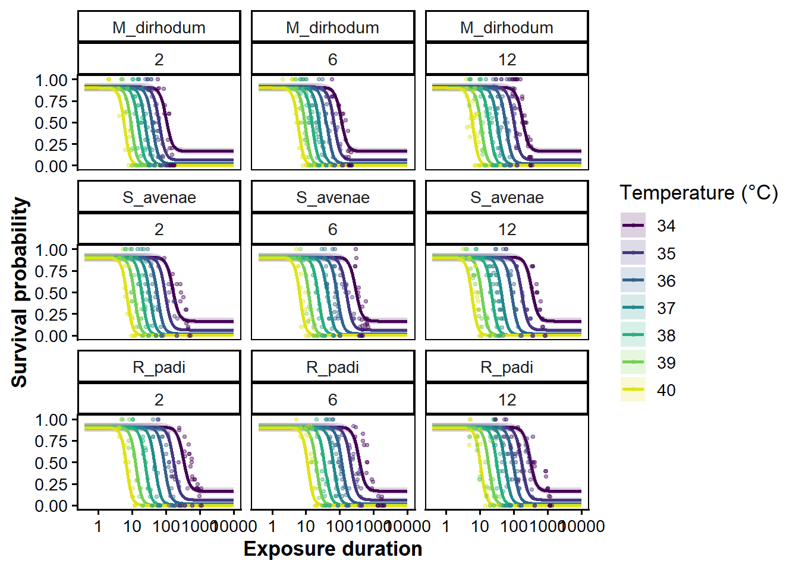

In their recent preprint, Noble et al. (n.d.) used time to death data from Li et al. (2023) to construct Bayesian thermal tolerance landscapes using the bayesTLS package. Conveniently, the three species in the paper (Metopolophium dirhodum, Sitobion avenae and Rhopalosiphum padi) are the same three species we extracted abundnace data for from 15 sites in the Rothamsted insect survey (rothamsted_data_readin.qmd). For future use, we replicate their analysis (found at https://daniel1noble.github.io/bayesTLS/#sec-aphids) here.
Data Read-in
#their package includes the data we need - how convenient!data(aphid_tdt)aphid_raw <- aphid_tdt |> dplyr::filter(branch =="heat") |> dplyr::mutate(species =droplevels(species))aphid_std <-standardize_data(aphid_raw, temp ="temp", duration ="duration_min",n_total ="n_total", n_surv ="n_surv",duration_unit ="minutes") # keeps `species`str(aphid_std)
We use the Noble et al. code here to construct a 4PL TLS model. Note that
# Species effects on z and CTmax with a temperature# slope on k, but we constrain the asymptotes to be constant (up = ~ 1, low = ~ 1).# Letting up/low vary by species x temperature overfits here and there is littl evidence up # and low vary dramatically with temperature.priors_age <-make_4pl_priors(aphid_std)sp <-c("speciesM_dirhodum", "speciesR_padi", "speciesS_avenae")dev <-c("age6", "age12","speciesR_padi:age6", "speciesR_padi:age12","speciesS_avenae:age6", "speciesS_avenae:age12")p_final <- priors_age[priors_age$nlpar !="mid", ] +# CTmaxdev: species baselines and deviations are both expected near 0 °C,# so one class-level prior works; slightly tighter on the deviationsprior(normal(0, 2), class ="b", nlpar ="CTmaxdev") +do.call(c, lapply(dev, \(cf) set_prior("normal(0, 1)", class ="b",nlpar ="CTmaxdev", coef = cf))) +# logz: species baselines centered at z ≈ 4 °C (95% ~1.5–10 °C)...do.call(c, lapply(sp, \(cf) set_prior("normal(1.39, 0.5)", class ="b",nlpar ="logz", coef = cf))) +# ...age/interaction terms are multiplicative changes in z, centered at no changeprior(normal(0, 0.5), class ="b", nlpar ="logz")p_final
prior class coef group resp dpar nlpar lb
normal(-3.227262, 1) b Intercept lowraw <NA>
normal(0, 0.5) b lowraw <NA>
normal(3.227262, 1) b Intercept upraw <NA>
normal(0, 0.5) b upraw <NA>
normal(0.693147, 1) b Intercept logk <NA>
normal(0, 0.3) b logk <NA>
gamma(2, 0.1) phi <NA>
normal(0, 2) b CTmaxdev <NA>
normal(0, 1) b age6 CTmaxdev <NA>
normal(0, 1) b age12 CTmaxdev <NA>
normal(0, 1) b speciesR_padi:age6 CTmaxdev <NA>
normal(0, 1) b speciesR_padi:age12 CTmaxdev <NA>
normal(0, 1) b speciesS_avenae:age6 CTmaxdev <NA>
normal(0, 1) b speciesS_avenae:age12 CTmaxdev <NA>
normal(1.39, 0.5) b speciesM_dirhodum logz <NA>
normal(1.39, 0.5) b speciesR_padi logz <NA>
normal(1.39, 0.5) b speciesS_avenae logz <NA>
normal(0, 0.5) b logz <NA>
ub tag source
<NA> user
<NA> user
<NA> user
<NA> user
<NA> user
<NA> user
<NA> user
<NA> user
<NA> user
<NA> user
<NA> user
<NA> user
<NA> user
<NA> user
<NA> user
<NA> user
<NA> user
<NA> user
wf_prior <-fit_4pl(aphid_std,ctmax =~0+ species * age, z =~0+ species * age,k =~ temp_c, up =~ temp_c, low =~ temp_c,prior = p_final, t_ref =60, backend ="rstan",sample_prior ="only", silent =2, refresh =0)wf_aphid <-fit_4pl(aphid_std,ctmax =~0+ species * age, z =~0+ species * age,k =~ temp_c, up =~ temp_c, low =~ temp_c,prior = p_final, t_ref =60,silent =2, refresh =0, backend ="rstan",file_refit ="on_change",file =here("data", "aphid_species_age"))
Per-species TDT parameters
We can extract canonical TDT parameters for each species.
#|echo: false#|warning: falseaphid_tls <-tls(wf_aphid, by =c("species","age"), lethal =TRUE)
`t_ref` not provided; defaulting to the model fit's reference exposure: 60 min (1 hour). Pass `t_ref` explicitly to read CTmax at a different reference.
Warning: Values from `value` are not uniquely identified; output will contain list-cols.
• Use `values_fn = list` to suppress this warning.
• Use `values_fn = {summary_fun}` to summarise duplicates.
• Use the following dplyr code to identify duplicates.
{data} |>
dplyr::summarise(n = dplyr::n(), .by = c(species, quantity)) |>
dplyr::filter(n > 1L)
We can plot the survival curves across experimental temperatures

Moving forward to predicting injury and survival
Refer to the vignette to see how they predict survival over temperature traces. We would be able to accomplish something similar with microclimates/measured temperatures. Functions to use are predict_heat_injury() and plot_heat_injury().
Below is an example for one summer at one site. Note that the predict_heat_injury function takes a while to run - 800 seconds on my machine.
Li, Yuan-Jie, Si-Yang Chen, Lisa Bjerregaard Jørgensen, et al. 2023. “Interspecific Differences in Thermal Tolerance Landscape Explain Aphid Community Abundance Under Climate Change.”Journal of Thermal Biology 114 (May): 103583. https://doi.org/10.1016/j.jtherbio.2023.103583.
Noble, Daniel W. A., Pieter A. Arnold, Shinichi Nakagawa, and Patrice Pottier. n.d. A Flexible Modelling Framework for Estimating Thermal Tolerance and Sensitivity. https://doi.org/10.64898/2026.07.16.738378.